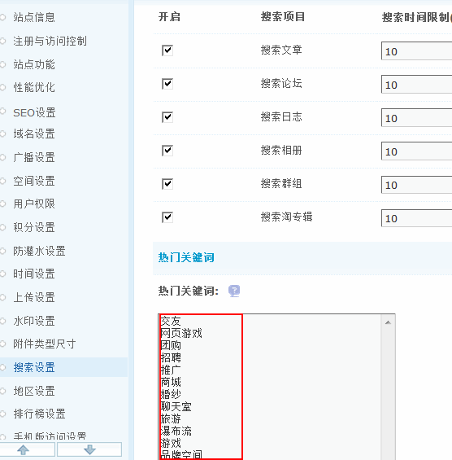

搜索设置
在社区不断积累沉淀的过程中，用户发现往往是愈是专业的社区却不能迅速的找到自己想要的内容而社区价值的挖掘往往需要通过站点主动的推荐和被动的搜索来呈现，主动推送方面我们提供了门户+DIY便于内容更好的展示和管理，同时我们引入了纵横搜索，让搜索变得更加精准、高效、易用。
在搜索运营过程中，我们发现网友在遇见问题的时候不知道该搜什么、怎么搜，因此，为用户推荐其感兴趣的话题、热门关键字的推荐就成了日常运营中所必须注意的一个细节，纵横搜索可以对论坛的信息进行更加深入的挖掘和提炼，并总结为热点关键词通过各种情境下不同的形式推荐给用户，让网友在您站内多留一会儿。同时将社区价值以最优质、最相关的形式呈现在搜索结果页！
一、开启搜索
开启搜索功能，可以在后台进行设置开启、限制搜索。
操作路径：【后台】=>【全局】=>【搜索设置】
如下图所示为全部开启：
开启搜索功能后在前台的显示如下：
可以在开启的任意模块中进行搜索。
二、热门关键词推荐
当您遇到热门问题不知道该搜什么，怎么搜的时候，可以点击热门关键词进行搜索，将直接显示相关结果推荐。
热门关键词也可以在后台直接添加
在前台的显示效果：
三、Sphinx 全文检索设置
一般而言，Sphinx 是一个独立的搜索引擎，意图为其他应用提供高速、低空间占用、高结果相关度的全文搜索功能。
1、设置 Sphinx 主机名，或者 Sphinx 服务 socket 地址
开启Sphinx 全文检索后，需要填写 Sphinx 主机名：例如，本地主机填写“localhost”，或者填写 Sphinx 服务 socket 地址，必须是绝对地址：例如，/tmp/sphinx.sock。
2、设置 Sphinx 主机端口
填写 Sphinx 主机端口：例如，3312，主机名填写 socket 地址的，则此处不需要设置。
3、设置标题索引名
填写 Sphinx 配置中的标题主索引名及标题增量索引名：例如，“threads,threads_mintue”。
注意：多个索引使用英文符号“,”连接，必须按照 Sphinx 配置文件中的索引名填写。
4、设置全文索引名
填写 Sphinx 配置中的全文主索引名及全文增量索引名：例如，“posts,posts_mintue”。
5、设置最大搜索时间
填写最大搜索时间,以毫秒为单位。参数必须是非负整数。默认值为 0,意思是不做限制。
6、设置最大返回匹配项数目
填写最大返回匹配项数目，必须是非负整数，默认值10000。
7、设置全文索引评分模式
有三种模式可供选择：
1)SPH_RANK_PROXIMITY_BM25， 默认模式，同时使用词组评分和 BM25 评分，并且将二者结合。
2)SPH_RANK_BM25，统计相关度计算模式，仅使用 BM25 评分计算(与大多数全文检索引擎相同)。这个模式比较快，但是可能使包含多个词的查询的结果质量下降。
3)SPH_RANK_NONE，禁用评分的模式，这是最快的模式。实际上这种模式与布尔搜索相同。所有的匹配项都被赋予权重1。